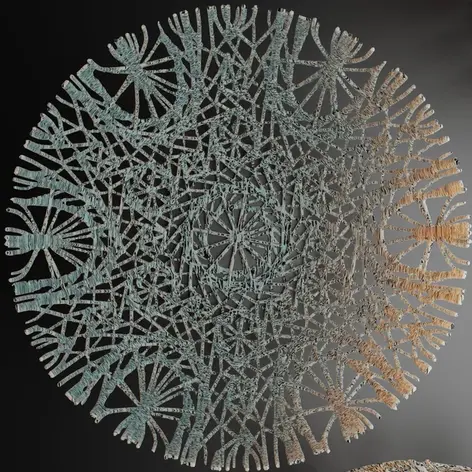
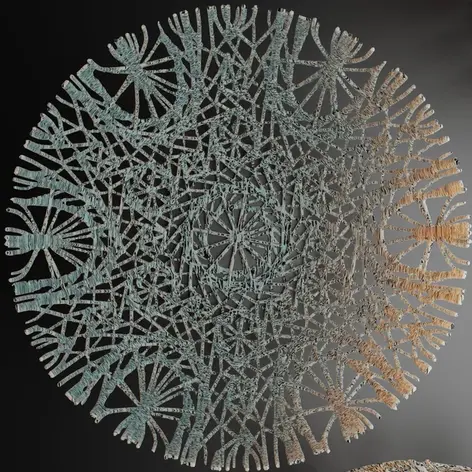

outils:
blender |
definition:
MYCOR
FR:
Mycor est une série d'expérimentations esthétiques
inspirées des formations structurelles
semi-chaotiques constituées par le mycorhize
présent dans le planché des forêts.
Le mycorhize ayant pour caractéristique
de créer des réseaux divers
reliant différents points dans l'espace.
Je m’inspire de ce principe pour créer différents patterns
et objets à des échelles variables.
ENG:
MYCOR is a series of aesthetic experiments
inspired by the semi-chaotic structural
formations of the mycorrhizae
present in the forest floor.
Mycorrhizae have the characteristic
of creating diverse networks
linking different points in space.
I draw inspiration from this principle
to create different patterns and objects
at varying scales.
 
